Destrezas y conocimientos en el manejo de
sentencias DDL y DML de SQL
1- Problema: Trabaje con la tabla "Libreta".
2- Cree una tabla llamada "libreta". Debe tener los siguientes campos:
nombre (cadena de 20),
domicilio (cadena de 30) y
teléfono (cadena de 11):
create table libreta(nombre varchar(20), domicilio varchar(30), teléfono varchar(11) );
3- Visualice las tablas existentes para verificar la creación de "libreta" (show tables).
4- Visualice la estructura de la tabla "libreta". (describe).
5- Ingrese los siguientes registros: ('Alberto Mores','Colon 123','4234567'); ('Juan Torres','Avellaneda 135','4458787');
6- Seleccione y muestre todos los registros de la tabla.
7- Construya las sentencias que actualicen los datos que acaba de insertar.
8- Insertar 5 registros más.
9- Cuente cuántos registros se ingresan.
vamos a desglosar cada paso y explicar las sentencias en SQL utilizadas en phpMyAdmin para manejar las sentencias DDL (Data Definition Language) y DML (Data Manipulation Language).
1. Problema: Trabaje con la tabla "Libreta"
Vamos a crear y gestionar una tabla llamada "libreta".
2. Crear una tabla llamada "libreta"
Sentencia SQL:
CREATE TABLE libreta (
nombre VARCHAR(20),
domicilio VARCHAR(30),
teléfono VARCHAR(11)
);
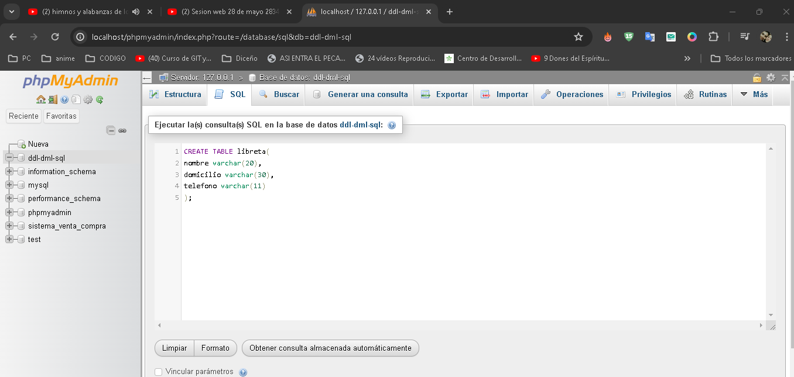
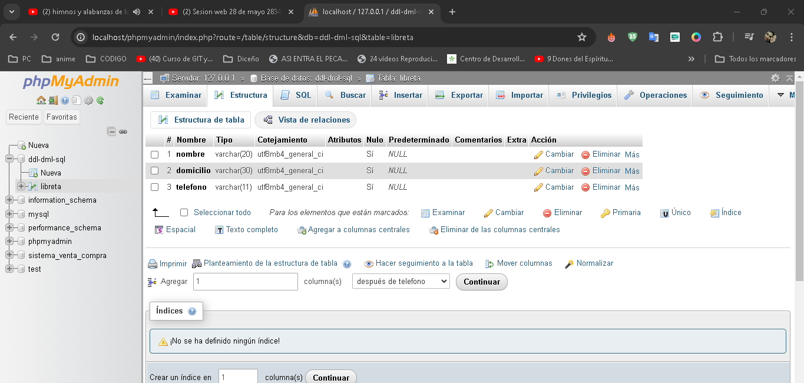
Explicación:
CREATE TABLE: Esta sentencia crea una nueva tabla en la base de datos.
libreta: Es el nombre de la tabla.
nombre VARCHAR(20): Define una columna llamada "nombre" que puede almacenar cadenas de hasta 20 caracteres.
domicilio VARCHAR(30): Define una columna llamada "domicilio" que puede almacenar cadenas de hasta 30 caracteres.
teléfono VARCHAR(11): Define una columna llamada "teléfono" que puede almacenar cadenas de hasta 11 caracteres.
3. Visualizar las tablas existentes
Sentencia SQL:
SHOW TABLES;
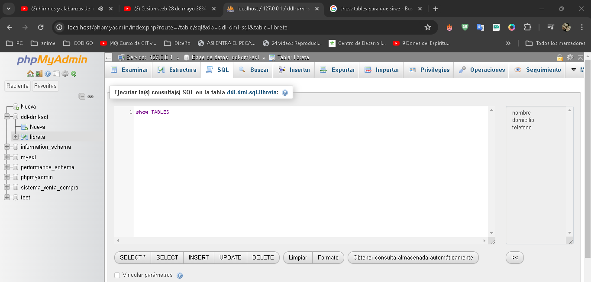
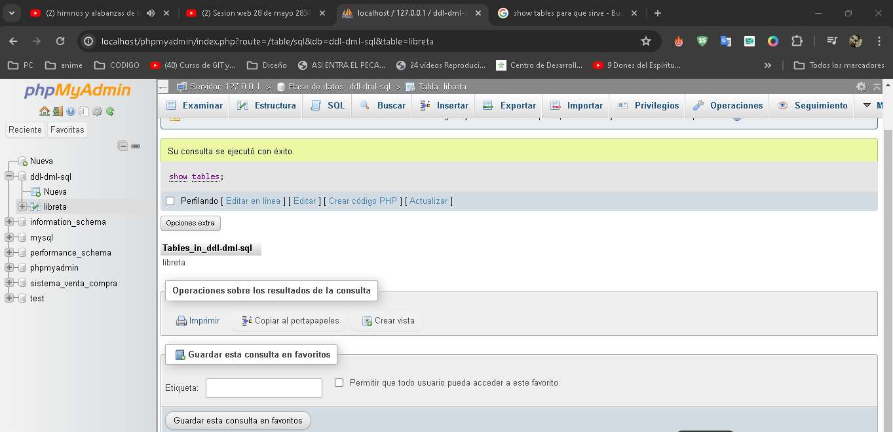
Explicación:
SHOW TABLES: Muestra una lista de todas las tablas en la base de datos actual.
4- Visualizar la estructura de la tabla "libreta"
Sentencia SQL:
DESCRIBE libreta;
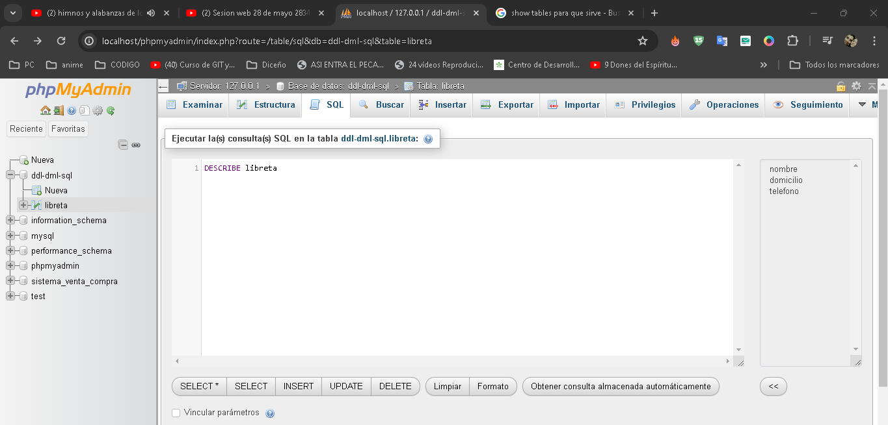
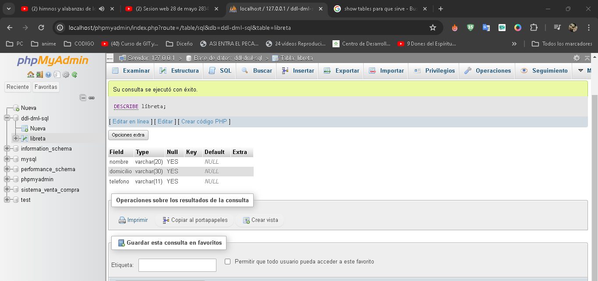
Explicación:
DESCRIBE: Muestra la estructura de la tabla especificada, incluyendo las columnas y sus tipos de datos.
5- Ingresar registros
Sentencia SQL:
INSERT INTO libreta (nombre, domicilio, teléfono) VALUES
('Alberto Mores', 'Colon 123', '4234567'),
('Juan Torres', 'Avellaneda 135', '4458787');
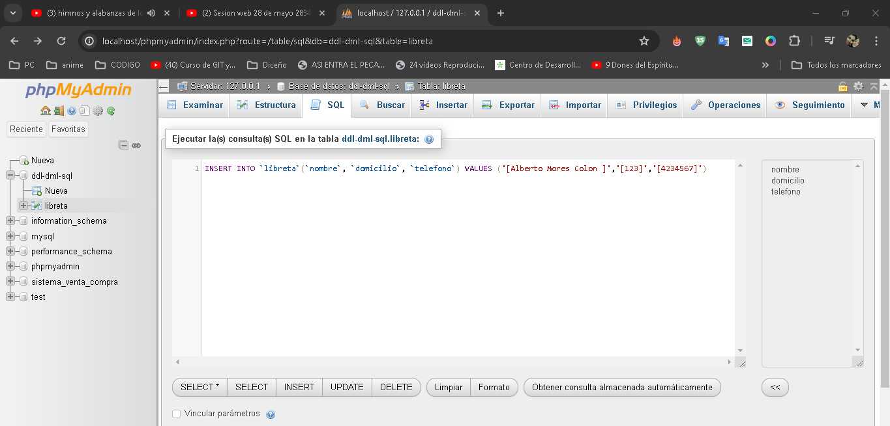
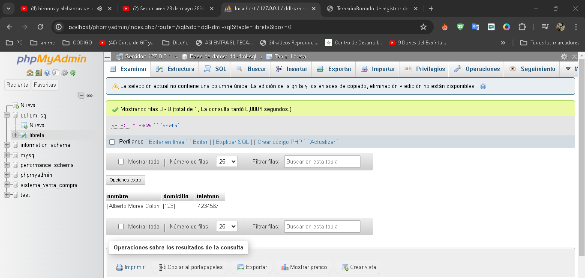
Explicación:
INSERT INTO libreta (nombre, domicilio, teléfono): Inserta datos en las columnas "nombre", "domicilio" y "teléfono" de la tabla "libreta".
VALUES ('Alberto Mores', 'Colon 123', '4234567'): Especifica los valores que se van a insertar en la tabla.
6- Seleccionar y mostrar todos los registros
Sentencia SQL:
SELECT * FROM libreta;
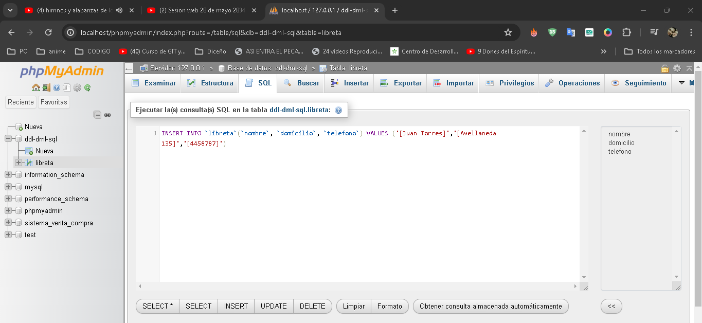
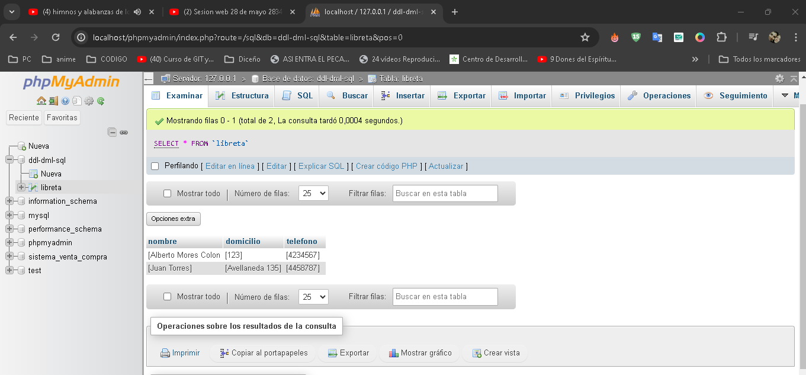
Explicación:
SELECT * FROM libreta: Selecciona y muestra todos los registros y todas las columnas de la tabla "libreta".
7- Actualizar datos insertados
Sentencia SQL:
UPDATE libreta SET teléfono = '4245678' WHERE nombre = 'Alberto Mores';
UPDATE libreta SET domicilio = 'Av. Belgrano 456' WHERE nombre = 'Juan Torres';
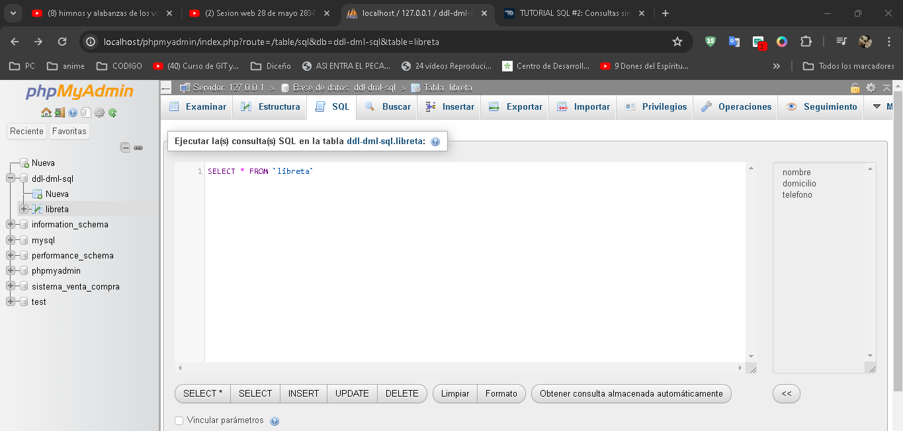
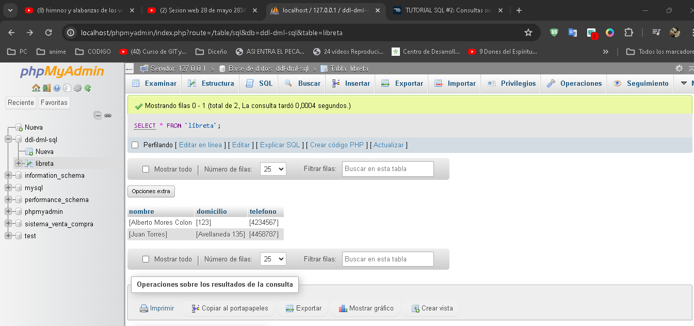
Explicación:
UPDATE libreta: Modifica los registros en la tabla "libreta".
SET teléfono = '4245678': Establece el nuevo valor de la columna "teléfono".
WHERE nombre = 'Alberto Mores': Especifica qué registro debe ser actualizado, en este caso, donde el nombre es "Alberto Mores".
8- Insertar 5 registros más
Sentencia SQL:
INSERT INTO libreta (nombre, domicilio, teléfono) VALUES
('Maria Lopez', 'San Martin 789', '4578965'),
('Carlos Perez', 'Rivadavia 456', '4123456'),
('Ana Gomez', 'Sarmiento 789', '4321987'),
('Luis Fernandez', 'Mitre 321', '4012345'),
('Elena Diaz', 'Alsina 654', '4098765');
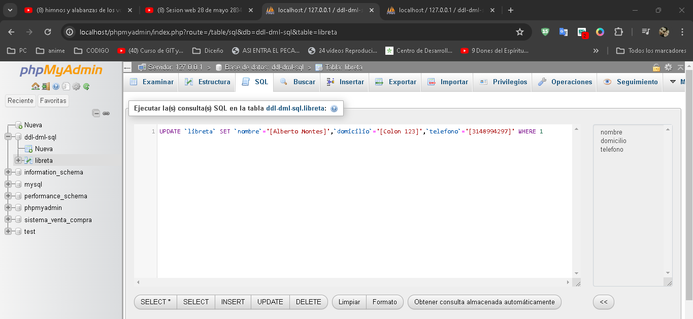
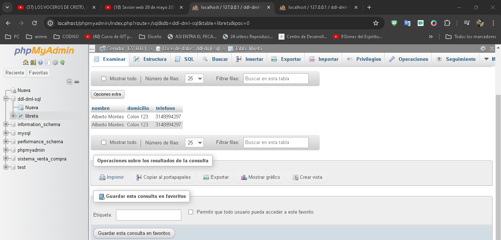
Explicación:
Similar al paso 5, inserta 5 nuevos registros en la tabla "libreta".
9- Contar el número de registros ingresados
Sentencia SQL:
SELECT COUNT(*) FROM libreta;
Explicación:
SELECT COUNT(*) FROM libreta: Cuenta el número total de registros en la tabla "libreta".
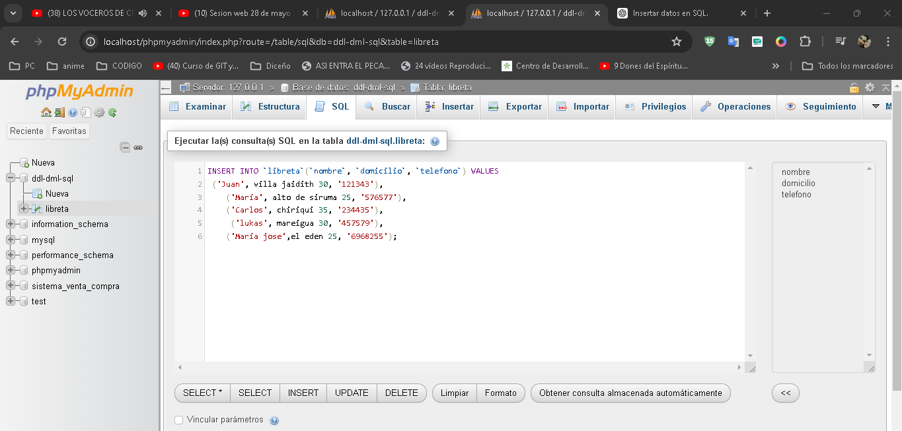
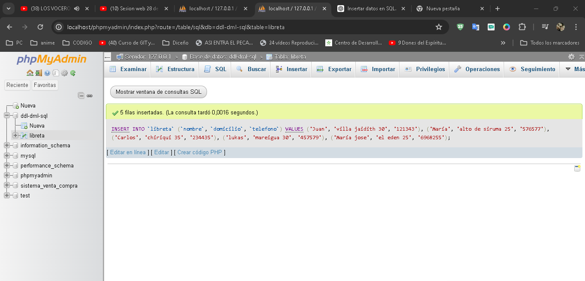
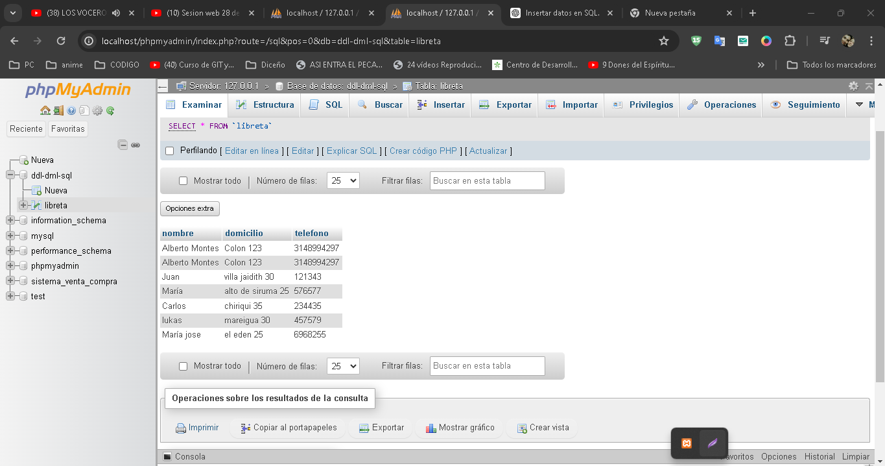
.png)